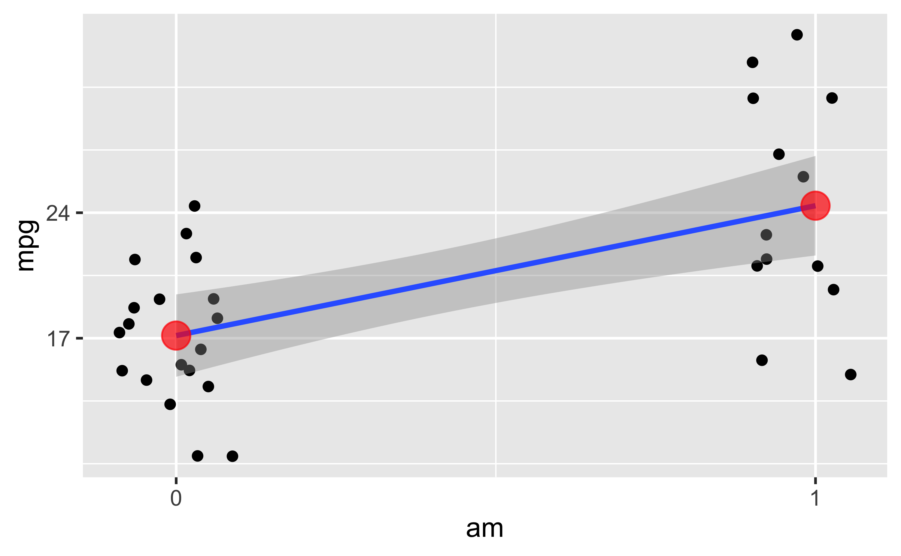

Das ist ein Fünf-Minuten-Bayes-Kurs
Sie würden gerne Bayes lernen und dafür zwischen 1-3 Wochen Zeit investieren? Dann sind Sie hier falsch. Dieser Post zeigt einen Kurzüberblick in Bayes-Statistik in fünf Minuten. Naja, ich probiere es jedenfalls.
Forschungsfrage
Sagen wir, uns interessiert folgende Forschungsfrage, die mit Methoden der Inferenz-Statistik untersucht werden soll. In diesem Fall Bayes-Inferenz (nicht Frequentistische Statistik).
Verbrauchen Autos mit Automatik-Getriebe im Durchschnitt mehr Sprit als Autos mit manuellem Getriebe?
- AV: mpg (miles per gallone)
- UV: am (automatic vs. manual)
Die AV ist metrisch. Die UV ist binär. Wir vergleichen also zwei Gruppen, das ist ähnlich zum t-Test.
Vorbereitung
data("mtcars") # Datensatz laden
library(rstanarm) # Funktionen für Bayes-Statistik laden
library(tidyverse) # Für DatenjudoDer Datensatz mtcars ist “fest eingebaut” in R, so dass wir ihn nicht irgendwo herunterladen müssen.
Hilfe zum Datensatz bekommt man so:
help(mtcars) # Hilfe/Codebook zum Datensatz
# Output hier nicht dargestelltVisualisierung
Zwar nicht Gegenstand dieses Posts, aber hilfreich, daher hier nur kurz ein Bild ohne Syntax:

Jeder (leicht verwackelte) Punkt stellt ein Auto dar. Die Line ist die Regressionsgerade. Die roten Punkte sind die Mittelwerte der beiden Gruppen.
Zur Interpretation der Regression
Die einfache Regression (also mit nur einer UV) hat zwei Koeffizienten: Achsenabschnitt und Steigung.
Bei einer binären (zweistufigen) UV bedeutet das:
- Der Achsenabschnitt zeigt den vorhergesagten Wert (der Mittelwert) der 1. Gruppe.
- Die Steigung zeigt den (vorhergesagten) Unterschied der zweiten Gruppe (im Vergleich zur 1. Gruppe).
Der vorhergesagte Wert der zweiten Gruppe ergibt sich also als Summe von Achsenabschnitt plus Steigung.
Modell berechnen
Nutzen wir das allgemeine (oder verallgemeinerte) lineare Modell, um unsere Forschungsfrage zu beantworten. Anders gesagt: Wir berechnen einen Regression. Das schöne an einer Regression ist, sie passt1 auf die meisten Probleme, so ähnlich wie ein Schweizer Taschenmesser.
m1 <- stan_glm(mpg ~ am, data = mtcars)Schön oder: Die Syntax von stan_glm() entspricht der Syntax von lm().
Unterschied zwischen den zwei Gruppen
coef(m1)## (Intercept) am
## 17.14117 7.23137Was wir bekommen, sind Punktschätzer für die Population:
Der Achsenabschnitt wird auf ca. 17 geschätzt. Die Steigung (Unterschied zwischen den Gruppen) wird auf ca. 7 geschätzt.
Aber ist der Unterschied zwischen den Gruppen “signifikant”?
In Bayes gibt es das Wort “signifikant” nicht. Formulieren wir die Frage doch so um:
Liegt der Wert “Null” innerhalb oder außerhalb des 90%-Konfidenzintervalls (KI)?
posterior_interval(m1)## 5% 95%
## (Intercept) 15.254335 19.033602
## am 4.272263 10.316920
## sigma 4.083712 6.269345Das 90%-KI wird auf den Bereich von ca. 4 bis 10 geschätzt. Die Null liegt nicht in diesem Intervall.
Folglich verwerfen wir die Nullhypothese.
Ich hätte aber lieber ein 89% oder ein 95%-KI!
Also gut…
posterior_interval(m1, prob = .89) # oder auch prob = .95 etc.## 5.5% 94.5%
## (Intercept) 15.308339 18.980810
## am 4.360551 10.214754
## sigma 4.101605 6.228754Warum eigentlich 89%?
Richard McElreath begründet die 89 so: Es ist die kleinste Primzahl kleiner als 95. Noch Fragen? 😄
Mit welcher Wahrscheinlichkeit ist der Unterschied größer als Null?
Eine interessante Variante der Forschungsfrage ist zu fragen, mit welcher Wahrscheinlichkeit - basierend auf den Daten und dem Modell - man mit einem Unterschied größer als Null zwischen Gruppen rechnen kann?
Wandeln wir das Modellobjekt in eine Tabelle um:
m1_stipros <-
m1 %>%
as_tibble() # Modellergebnis m1 in Tabelle (tibble) umwandeln## # A tibble: 4,000 × 3
## `(Intercept)` am sigma
## <dbl> <dbl> <dbl>
## 1 15.8 8.25 4.56
## 2 18.9 5.32 5.23
## 3 15.7 8.23 4.10
## 4 15.7 8.76 4.54
## 5 16.0 9.43 4.82
## 6 18.6 4.69 5.04
## 7 15.3 9.21 4.97
## 8 16.8 8.39 5.03
## 9 16.2 8.17 3.66
## 10 17.2 7.06 5.04
## # … with 3,990 more rowsWie man sieht, findet das Modell in allen 4000 Stichproben (4000 ist der Defaultwert) einen Unterschied größer Null.
Wir resümieren also:
Laut Modell beträgt die Wahrscheinlichkeit praktisch 100%, dass wir einen Unterschied größer Null zwischen den Gruppenmittelwerten finden.
Fertig
Ich fasse zusammen. Wir haben gerade Bayes-Statistik betrieben. Und zwar haben wir ein einfaches Regressionsmodell, analog zum t-Test, berechnet. Dann haben wir ein Bayes-Analog zur Nullhypothese und zum Konfidenzintervall uns ausgeben lassen.
Interpretation der Ergebnisse
Im Frequentismus sind die zentralen Statistiken schwierig zu interpretieren.
In der Bayes-Statistik ist es einfach. Wir können sagen, dass (laut Modell!) der (mittlere) Gruppenunterschie mit 90% Wahrscheinlichkeit zwischen 4 und 10 Gallonen Sprit liegt.
Oft ist sie nur eine Näherung und manchmal eine schlechte, aber man kann erstaunlich viel mit der Regression machen, auch nicht-lineare wie polynombasierte oder exponentielle Zusammenhänge modellieren.↩︎